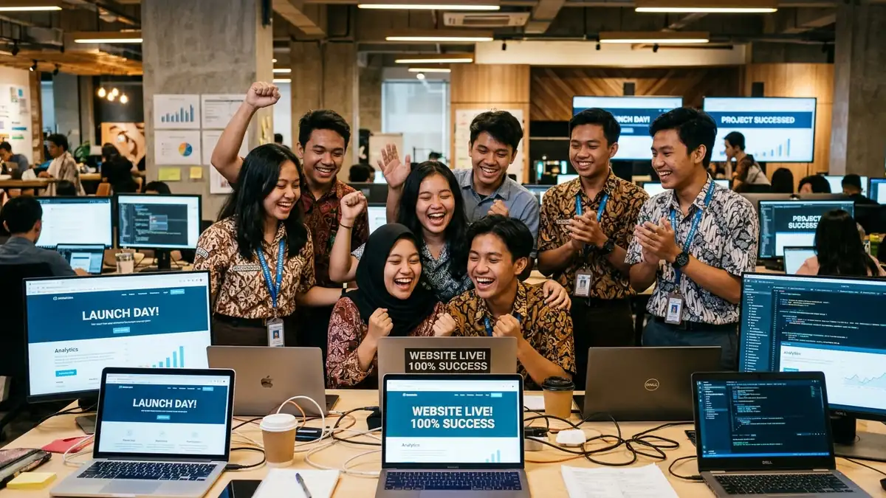
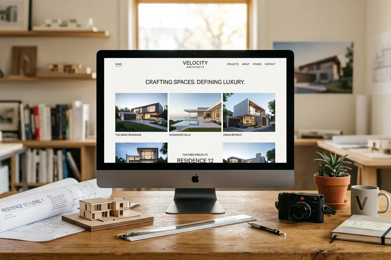
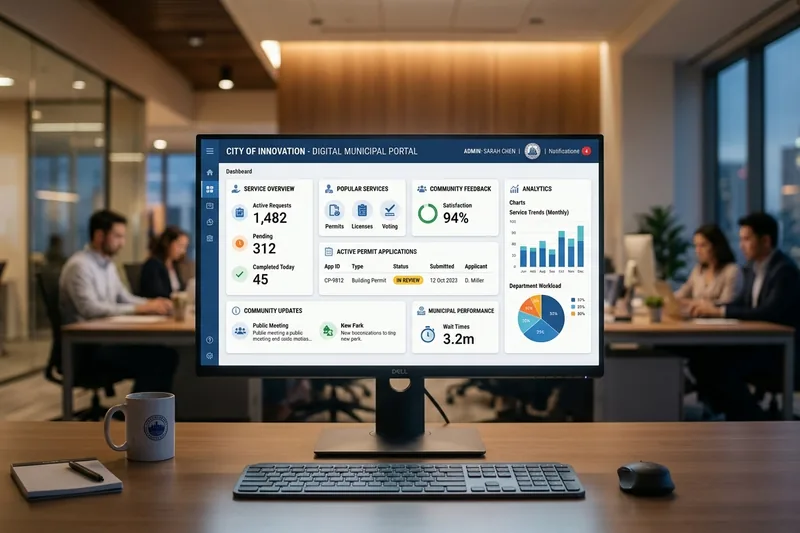

Mengapa Keterampilan Web & Digital Marketing Sangat Dibutuhkan?
Kombinasi kemampuan membangun website yang fungsional dan memasarkannya secara digital membuka peluang karier nyata bagi siswa SMK dan mahasiswa.

Program praktik untuk mengenal proses pembuatan website responsif dan penerapan digital marketing sesuai dengan kompetensi jurusan peserta. Belajar terarah untuk siswa SMK dan mahasiswa.
Mengenal pendekatan pembelajaran vokasi dan mahasiswa yang memadukan pengembangan website modern dengan strategi digital marketing aplikatif.
Program Magang ini dirancang secara khusus untuk menjawab kesenjangan antara teori akademik dan kebutuhan riil di dunia industri. Setiap peserta dilatih langsung mengerjakan alur kerja pembuatan website terintegrasi, mulai dari perumusan struktur, perancangan antarmuka (UI/UX), penulisan konten yang persuasif, hingga optimasi mesin pencari (SEO).

Pendekatan belajar berbasis praktik yang menghubungkan teknis pembuatan website, perancangan konten informatif, desain visual, dan strategi optimasi pencarian.
Membangun halaman website menggunakan standar HTML5 semantik, CSS responsif, dan framework modern agar mudah diakses di berbagai perangkat.
Merancang konten informatif dan teks persuasif yang menjawab kebutuhan audiens serta mempermudah komunikasi nilai program magang.
Menata tata letak yang konsisten, pemilihan warna berimbang, tipografi jelas, serta aset media visual yang dioptimalkan untuk performa web.
Menerapkan struktur heading yang runtut, metadata, sitemap, dan dasar strategi promosi digital agar informasi website mudah ditemukan.
Materi pembelajaran dan aktivitas praktik disesuaikan dengan kurikulum serta fokus kompetensi masing-masing jurusan peserta.
Fokus pengenalan konsep komputasi, logika pemrograman, dasar alur kerja web, pengolahan data sederhana, dan pemecahan masalah algoritma digital.
Fokus pada proses bisnis daring, riset kebutuhan audiens sasaran, perencanaan kalender konten, dasar SEO, copywriting, dan evaluasi performa pemasaran web.
Fokus pada komunikasi visual, prinsip tata letak antarmuka, harmoni tipografi, pengolahan gambar digital, aset grafis website, dan format media WebP.
Fokus spesifik pada rekayasa teknis pembuatan dan pemeliharaan website: implementasi HTML5 semantik, CSS3, JavaScript modern, Bootstrap 5, arsitektur kode rapi, dan pengujian lintas peramban.
Fokus pada infrastruktur pendukung publikasi website: setup local web server, pemahaman jaringan dasar, konfigurasi nama domain, manajemen DNS record, hosting, dan pengamanan protokol HTTPS.
Rangkaian materi yang dipelajari secara bertahap untuk membekali peserta dengan keterampilan pembuatan dan pemeliharaan website yang fungsional.
Memahami tujuan pembuatan website, karakteristik audiens, serta spesifikasi fitur yang diperlukan pengguna.
Menyusun peta situs (sitemap), alur navigasi halaman, wireframe tata letak, dan hierarki informasi.
Praktik coding HTML5 semantik, CSS3 responsif, JavaScript modular, dan integrasi komponen Bootstrap 5.
Membuat tata letak UI yang jelas, pemilihan kontras warna sesuai standar aksesibilitas, serta kompresi format gambar.
Menulis teks halaman yang jelas, informatif, menarik, dan menjawab pertanyaan yang sering dicari pengguna.
Mengonfigurasi meta tag, Open Graph, schema JSON-LD, sitemap, serta teknik pengenalan kata kunci pencarian.
Simulasi penayangan halaman web ke server lokal/hosting, validasi tampilan responsif lintas gawai, dan evaluasi hasil belajar bersama pembimbing program.
Langkah-langkah sederhana dan jelas mulai dari konsultasi awal hingga evaluasi pelaksanaan magang.
Calon peserta atau pembimbing menghubungi tim via WhatsApp 0822-2525-4434 untuk bertukar informasi awal.
Penyelarasan jurusan peserta dengan modul praktik yang sesuai kurikulum sekolah atau kampus.
Menerima detail ketersediaan kuota, kelengkapan berkas administrasi, dan jadwal pelaksanaan resmi.
Menjalani pembelajaran praktik intensif, bimbingan langsung, dan penyelesaian tugas proyek.
Peninjauan capaian kompetensi peserta, umpan balik pembimbing, dan penyusunan dokumentasi kegiatan.
Berbagai hasil proyek nyata yang berhasil dikembangkan oleh peserta magang sesuai dengan fokus keahlian masing-masing jurusan.

Kolaborasi siswa RPL dan DKV dalam menghasilkan layout minimalis dan performa skor 95+ di Google Lighthouse.

Karya siswa DKV dan Informatika dengan pengujian aksesibilitas WCAG AA dan struktur data transparan.
Dokumentasi visual suasana belajar, sesi diskusi terarah, dan aktivitas praktik peserta magang di lingkungan kerja nyata.
Kesan langsung dari siswa SMK dan mahasiswa yang telah menyelesaikan program magang praktik pengembangan website & digital marketing.
"Selama magang di sini, saya belajar langsung cara membangun website responsif dengan Bootstrap 5 dan JavaScript dari nol. Bimbingan dari mentor sangat intensif dan membuat saya jauh lebih percaya diri dalam coding."
"Materi riset audiens dan copywriting-nya aplikatif sekali. Saya diajarkan bagaimana menulis copy landing page yang memikat dan menerapkan dasar SEO agar halaman web dapat terindeks dengan baik di Google."
"Pengalaman yang sangat berharga bagi siswa TKJ. Saya mempraktikkan langsung setup local web server, konfigurasi domain, DNS, dan pengamanan protokol HTTPS. Benar-benar sesuai dengan standar dunia kerja!"
Informasi seputar kompetensi digital, panduan jurusan, dan wawasan dunia kerja untuk mendukung persiapan magang peserta.
Kombinasi kemampuan membangun website yang fungsional dan memasarkannya secara digital membuka peluang karier nyata bagi siswa SMK dan mahasiswa.

Ketahui perbedaan penekanan antara konsep komputasi Informatika dan rekayasa kode praktis pada jurusan Rekayasa Perangkat Lunak.

Website tidak dapat diakses publik tanpa infrastruktur server, konfigurasi domain DNS, dan pengamanan koneksi HTTPS yang stabil.
Jawaban langsung mengenai peserta, jurusan, kegiatan magang, dan cara berkonsultasi dengan pengelola program.